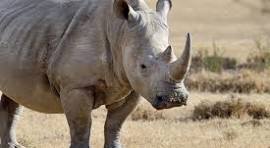

Rhinoceros
Critically Endangered
Estimated remaining: <28,000 across all 5 species
Habitat
Savannas, tropical forests, and wetlands across Africa and Asia. Species include Black Rhino, Javan Rhino, and Sumatran Rhino.
Threats
- Poaching for horns
- Habitat encroachment and agriculture
- Political instability in range countries
Conservation efforts
Armed anti-poaching units, translocation programs, rhino sanctuaries, and horn devaluation strategies. Supported by international NGOs and national parks.